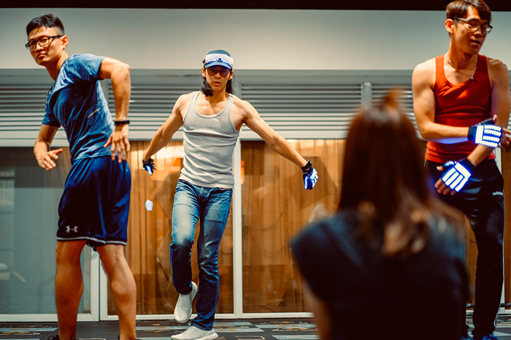

-冬天不冷，有一群人在忙碌著尾牙，充實而溫暖-
這幾年的冬天沒那麼冷，因為有一群人在燃燒發熱，在挑戰自我，在本該下班的時間相擁環抱夢想，而我慶幸自己也是那群人中的一員，充實而溫暖。
兩年前，第一次接觸尾牙員工表演，一位即將離職的前輩邀約，「要不要參加尾牙的跳舞表演？會不會跳都沒關係啦！」我從小就接觸舞台，甚至出國演出，台風穩健一直是我自豪的強項，但從來沒有接觸過大學迎新第一支舞以外的舞的我，實在沒有勇氣爽快答應，三天，是我猶豫已讀不回的時間，而接下來的三個月，就如同所有激勵人心的故事一樣，懷疑決定失望挫折到接受掌聲破涕為笑。
|  |
如果當初邀請的前輩在一開始就表明了自己即將離職不會參與演出，想必我會爽快的回絕，所以到現在我還不明白，當下他是否刻意隱瞞只為了抓交替？我沒有跳舞的底子，在那裡也沒什麼認識的人，看著有過演出經驗的同事即時做出老師剛才示範的動作，「我是誰？我在哪？我在幹嘛？」出竅的靈魂給了一記重擊，當頭棒喝把我拉回現實，「我太弱小！」不需要醫生的診斷證明就能確診，像遍尋不著浮木的旱鴨，後知後覺的發現自己即將滅頂。所幸同事們人都不錯，表明自己沒有經驗後，各各使出渾身解數讓我維持進度，隨著班長舉辦出遊活動與交換禮物，感情熱絡後自然也抹去了詢問舞蹈常識的尷尬，而我也重拾兒時的好奇心，不斷觀察跳得好看的人是怎麼運用柔軟的身體做出強而有力的動作，並在課餘時間對著鏡子揣摩，甚至，把握了短短幾層樓的電梯時間，畢竟大面的鏡子並不多見，而對突然走入電梯門的同事來說，在電梯內馬步紮穩雙手高舉的人也不多見吧...
很快的到了給所有同事驗收的那晚，雖然明白觀眾在乎的只是接續著的「一把抓」，但從聚集的人群中傳來自己名字時，手心依然冒汗。前導片放映，五、四、三、二、一，熟悉的音樂震耳欲聾，身體在無意識的狀態下動了起來，移除輔助的鏡子、站上寬廣的舞台，討厭的不安與歡悅的興奮竟同時存在，回過神來已完成了合照鞠躬，同仁的掌聲與董事長的紅包沖淡了三個月來苦練的委屈，當晚續攤的慶功像在挑戰青春，誰也不願意解散，最終睡醒依然疲勞的身體才宣判挑戰失敗。即便相片中的人多數已各奔東西，但回想起時仍是一抹笑意。
公司的尾牙員工表演是音樂與舞蹈輪流舉辦，我因參加了公司內部的歌唱比賽而獲得福委會的邀請，再次參與演出。這次是我熟悉的項目，唱著我選定的曲目，年初生澀的肢體都上台了，我實在找不到拒絕的理由，六千多人齊聚一堂聽我演唱，一生能有幾回？夫復何求阿！
樂團與舞團在我狹隘的認知中，最大的差異是每位演出者的配合度，跳舞時若非與同伴肢體協作，即便少數人動作生疏或段落混淆，其餘舞者仍能聽著音樂保持鎮定以待錯誤修正，「音樂」之於舞蹈表演是絕對正確的存在，然而，樂團在演奏樂曲時不像大型交響樂，有著決定一切的指揮，只要失誤出現而影響到第二位樂手，整首曲子都可能在瞬間分崩離析，練習的第一個月，就是在無數慘不忍睹的急停中走過。每個人心中都有對樂句的認知與既定的節拍，在熟練度與默契不足的階段，音樂往往不堪入耳，樂手們的程度也是良莠不齊，有彈奏相同和弦僅作微妙差異就能耳目一新，令人肅然起敬的音樂世家，也有「想」彈奏相同和弦卻往往大相逕庭，曾在學生時期音樂社團活躍的大夢想家，這次演出的挑戰莫過於如何在其中得到平衡，既能讓曲盡其妙者一展長才，又能讓今非昔比者重溫舊夢。所幸在溝通與磨合後，大家達成了共識，即使美中仍有不足，也是我們費盡心思的成果。
排練的過程不緊張，一切都按部就班完成，直到彩排當下才真正讓我感到焦慮，大型舞台的樂團演奏是聽不見也看不見彼此的，僅靠著監聽耳機傳遞音符溝通，難度驟增，所有熟悉的味道都亂了方寸，也許所有人都感受到了這份不安，彩排的表現與排練截然不同。走下舞台，穩住雙手、壓低嗓音，故作鎮定地與同伴商討策略，心虛的信心喊話持續了整天，直到緩緩升起的後台升降梯拎起著輕渺的我，我才覺悟，身為主唱，我不穩住大家怎麼穩住！若是齣連續劇，此時會響起熱血的音樂，運鏡由遠而近，聚焦於我肯定的眼；若是部動畫，一路劣勢的主角即將展開反擊，使出令人瞠目的密技，於是我享受舞台的效果、享受同伴的共鳴、享受觀眾的掌聲，寫下此文的同時，我又享受了一次。
因為這兩次的經驗，我在公司過的不錯，因為認識了各部門的同事，在業務溝通上多少有幫助，八卦、福利也有第一手消息。而年底的尾牙表演徵人，我不僅第一時間答應，還帶上了兩位沒有經驗的同事一同共襄盛舉，「要不要參加尾牙的跳舞表演？會不會跳都沒關係啦！」兩年前的話原封不動傳給同事，搖搖頭想著「誰會像我一樣沒事找事做啊？」石沉大海的心理建設才完成，竟遍地開花地給了我爽直的回應。就這樣，少了點緊張，多了點責任，冬天的下班時間再次被排滿。
參與演出的多半是前年的老班底，話匣子總是一開就不停，雖然工作忙碌下班只想倒頭就睡，但能和這群從「同事」昇華成「好友」的舞伴混在一起，疲勞但幸福。為期三個月的排練，我可以自豪地頒給自己全勤獎章，其實舞蹈內容不難，即使第一時間無法到位，嘗試幾次便能提綱挈領，但我相當尊重這些排練，也珍惜與同伴相處的時間，也許是心態轉變了吧？從專注於把舞蹈跳好的門外漢到熱衷於把氣氛顧好的開心果，說不上什麼了不起的成長，但總想付出些什麼，至少，每次點名都能舉手簽到。這次的指導老師幽默年輕，上課時沒有距離感，面對動作生硬的新夥伴，她也都能用玩笑的方式化解學生的不自在，在她專業的教學與班長的協助下，排練相當順利。隨著感情升溫，尾牙時間也越來越近，在最後的幾次排練，大家不約而同地表示懷念這段時光，下班後不再一同揮灑顯得有些落寞，而我亦然，竟害怕起演出到來，不是惦記時間準備不足，而是擔心眼前光景不再。
 |
今年的尾牙特別早，而我也起得特別早，恨不得繁忙生活中的解放日無限延長，照慣例一早到了會場，吃著一定會有人遲到的早餐，跳著一定會有人失誤的彩排，著裝梳化，看著邋遢的工程師變人模人樣，看著保守的上班族將封印解放，人手一機喀擦喀擦，深怕漏了這難能可貴的模樣。然而，晚上的演出究竟如何？說實在我並不關心，同事上傳的影片也不曾點擊，對我而言，當下大汗淋漓、用盡全力，已經是努力的證明，是最好的證明。
從小父母為子女報名才藝，老師為學生訓練專長，進入社會以後，有多久沒有再次站上舞台？而社交的圓圈也在畢業那天停止擴張，難道這就是長大必需的祭品嗎？套句老話：「不做不會怎樣，做了很不一樣。」感謝公司機會的給予，也感謝自己魯莽的參與，也許有天我會回想，那幾年的冬天沒那麼冷，因為有一群人在忙碌著尾牙，充實而溫暖。